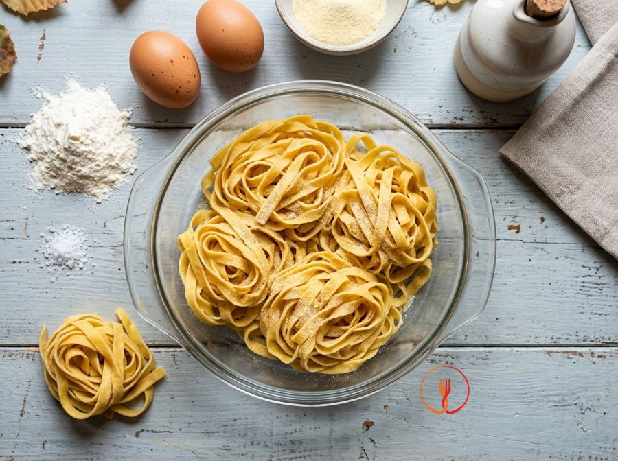

Pasta fresca all'uovo
Ingredienti
- Farina 00400 gr
- Uova medie4 numero
- Sale1 pizzico
- Farina di semola per spolverareq.b.
Allergeni
Glutine, Uova
Può contenere tracce di: Senape, Soia.
Procedimento
- Disponi la farina a fontana su una spianatoia e crea un incavo centrale abbastanza ampio da contenere le uova.
- Rompi le uova al centro, aggiungi il sale e sbattile leggermente con una forchetta, incorporando gradualmente la farina dai bordi.
- Quando il composto diventa consistente, lavora con le mani fino a raccogliere tutta la farina.
- Impasta energicamente per circa 10–12 minuti, ripiegando e ruotando l'impasto fino a ottenere una massa liscia, compatta ed elastica.
- Forma una palla, avvolgila nella pellicola e lasciala riposare per almeno 30 minuti a temperatura ambiente.
- Dividi l'impasto in porzioni e stendile con il mattarello o con la macchina per pasta, partendo dallo spessore maggiore e diminuendolo progressivamente.
- Taglia le sfoglie nella forma desiderata: tagliatelle, fettuccine, lasagne o maltagliati. Spolvera leggermente con semola per evitare che si attacchino.
- Cuoci in abbondante acqua salata per circa 2–4 minuti, verificando la cottura in base allo spessore e alla forma.
Consigli dello chef
Consigli, errori e alternative:
- Se l'impasto è troppo asciutto aggiungi pochissima acqua, un cucchiaino alla volta.
- Se è troppo appiccicoso aggiungi poca farina.
- Non saltare il riposo: permette al glutine di rilassarsi e facilita la stesura.
- Per una pasta più rustica sostituisci 100 g di farina 00 con semola rimacinata.
- Per ravioli e tortellini stendi la sfoglia più sottile rispetto a quella delle tagliatelle.
Valori nutrizionali (stima)
| Per porzione (153 g) | Per 100 g | |
|---|---|---|
| Energia | 1757 kJ / 420 kcal | 1151 kJ / 275 kcal |
| Proteine | 16 g | 11 g |
| Carboidrati | 77 g | 50 g |
| di cui zuccheri | 1.9 g | 1.3 g |
| Grassi | 5.8 g | 3.8 g |
| di cui saturi | 1.8 g | 1.1 g |
| Fibre | 2.6 g | 1.7 g |
| Sale | 0.4 g | 0.3 g |
Valori stimati con l'AI su dati medi CREA / USDA: sono indicativi e non sostituiscono il parere di un medico o di un nutrizionista.
Apri la ricetta nell'app per la lista della spesa, le schede ingredienti e i negozi vicini.